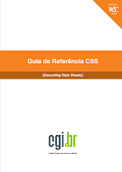
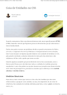

TÍTULO
ÚLTIMA MODIFICAÇÃO
Criando um Menu Vertical DropDown com CSS e HTML.pdf
17 de mar.
Giuliano Prado
CSS3 Flexbox_ Funcionamento e propriedades.pdf
17 de mar.
Giuliano Prado
CSS_ como criar elementos arredondados.pdf
17 de mar.
Giuliano Prado

guia-css-w3cbr.pdf
30/07/2021
Giuliano Prado

Guia_medidas_HTML_CSS.pdf
17 de mar.
Giuliano Prado